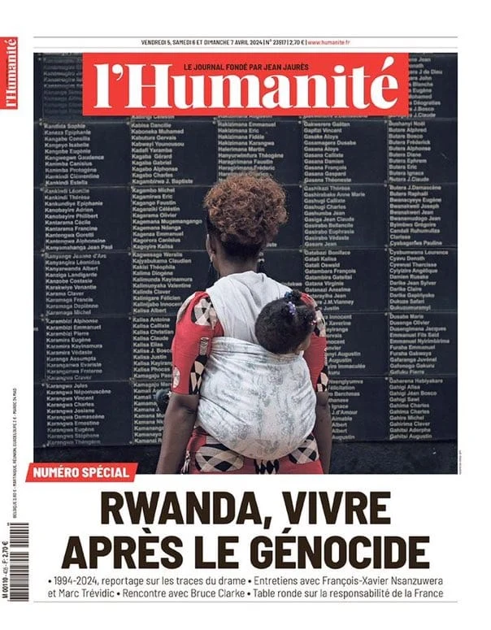

Revue de presse
Rwanda. Trente ans après le génocide des Tutsi, la une de L’Humanité
Date indiquée par Facebook · 5 avril 2024
Repères éditoriaux
La une relayée le 5 avril 2024 traite de la vie au Rwanda, trente ans après le génocide des Tutsi.
Texte conservé avec la publication
À la Une de #LHumanité ce vendredi, #Rwanda, trente ans plus tard, vivre après le génocide des Tutsi.

Sources
Archive rouge · export Facebook · AR-0002-FB-01430
À lire aussi · L'élan de la Libération de Paris · Le lien d’origine